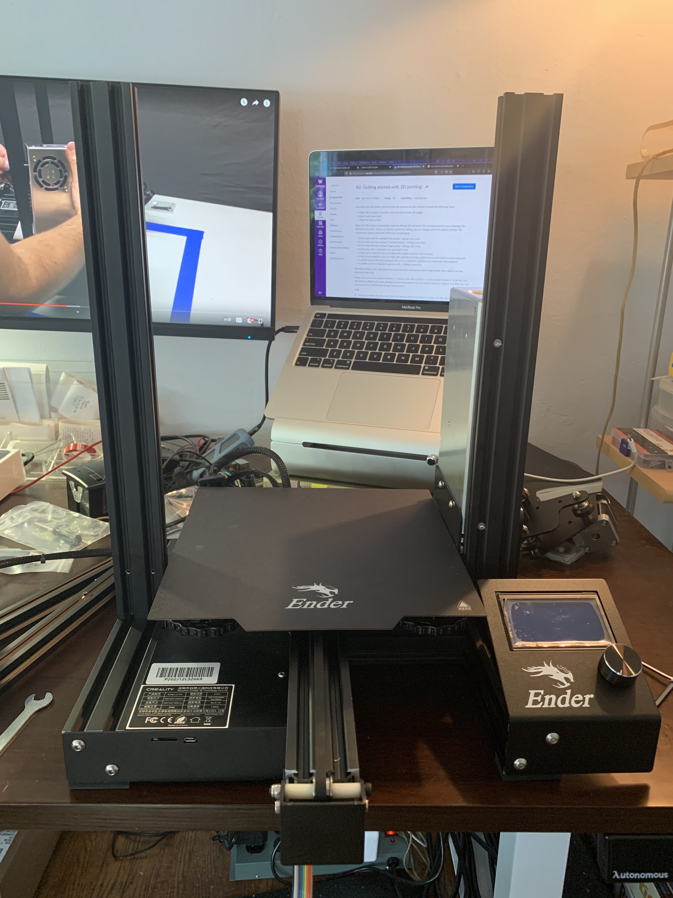
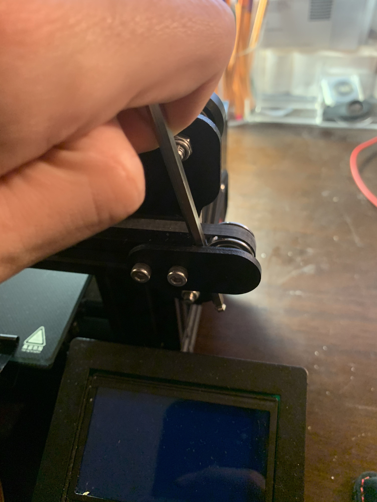
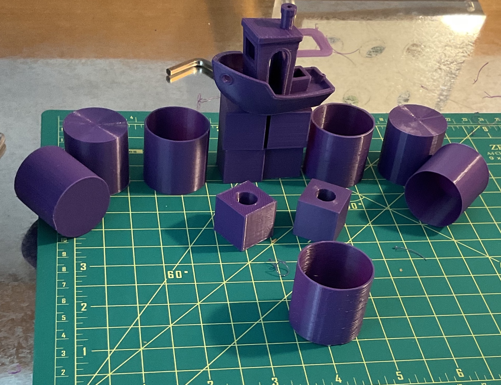
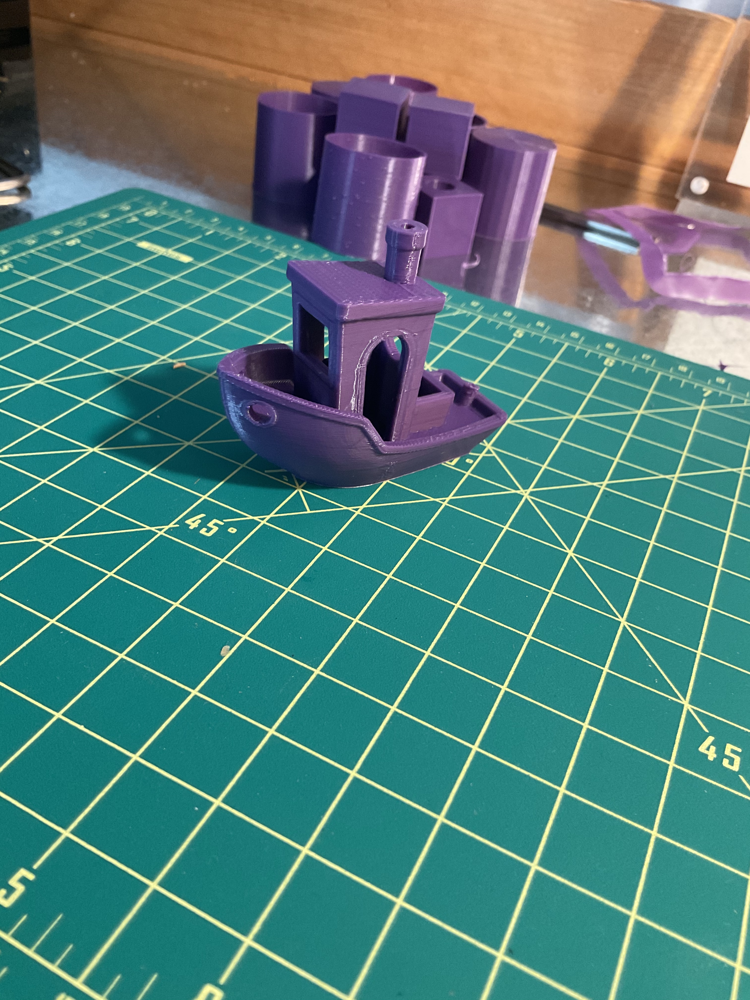
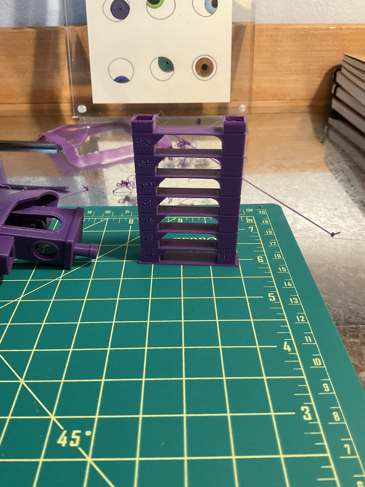
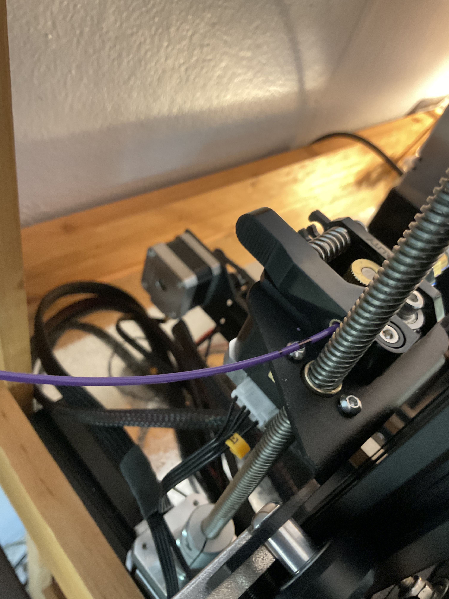
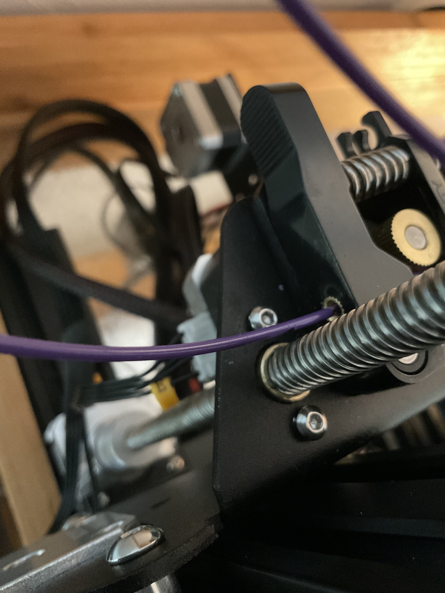
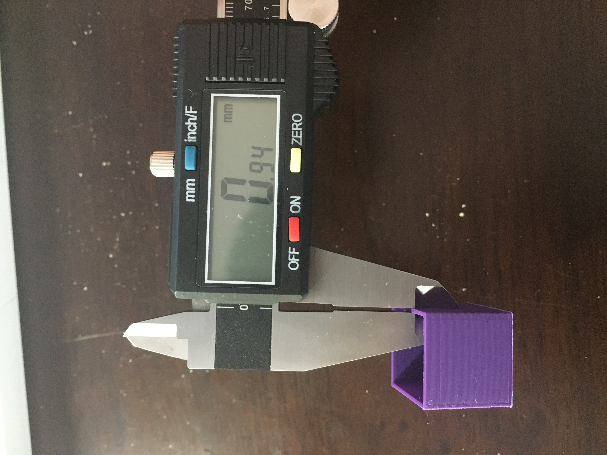
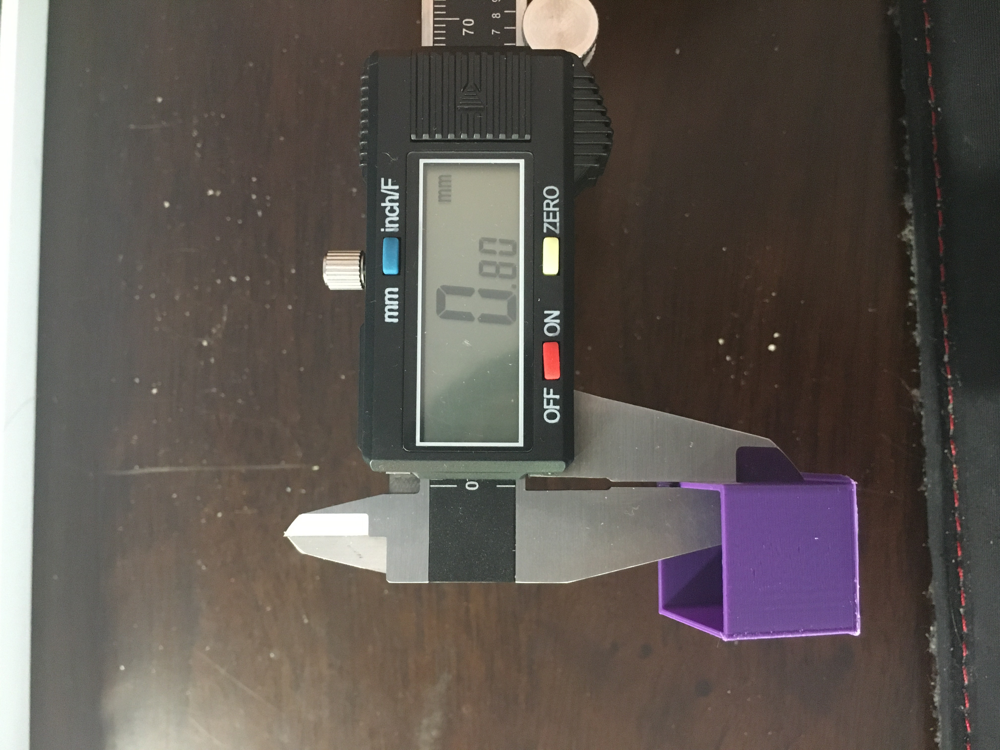

cubes, tubes, cylinders & calipers!
assembly!
Assembly took me ~2.5 hrs. After getting my Ender I watched a parts tour & assembly video to get a sense of what I was in for. The video linked says the instructions included in the box are straightforward if you're "mechanically minded"; this may well be true, but I knew that other videos would likely have tips & tricks to ensure better initial assembly (like this one & this one, which I found based off view count/likes). I watched it through once on 2x speed to get a sense of scale, then started.

The most frustrating parts I encountered were: getting the Z-stop switch to attach firmly using the T nuts (which became easy once I realized I should keep the T nuts riiight on the end of the screw) and getting the horizontal extrusion of the X axis perfectly straight; this is a step that is not in the assembly instructions but was discussed in the video I built along with. After feeding the X axis extrusion through the Z-leadscrew, I found that the right-hand side was just over a millimeter higher than the left. To adjust, I removed the extrusion and adjusted the tightness of the M4x16 bolts which attach the carriagge to the extrusion. This took a couple of iterations to get right, but in the end I got both sides lined up. One of the most helpful tips I found online was in tightening the X-axis belt. Using only my hand to push the tensioner, I couldn't get it as tight as I wanted (and nowhere near as tight as the Y-axis belt that came pre-attached on my Ender). But, using e.g. an allen wrench to get some more leverage:

The belt was significantly more taught after this, as evidenced by the little twang I could get from snapping it. The last edit I had to make was to move the Z-stop switch up to accomodate for the glass bed I have. Then I fired things up and auto-homed for the first time on the new printer :)
results!
Below are the results of the test prints. A note that the measurements varied slightly when taken at different locations on the printed object; the numbers documented here are 'somewhere in the middle', but I'm more careful about taking an average for the final cube with a hole in it.| thing! | dimensions! (± 0.005 mm) | print time! | |||||||||||||||||||||||||||||||||||||||||||||||||||||||||||||||||||||||||||||||||
|---|---|---|---|---|---|---|---|---|---|---|---|---|---|---|---|---|---|---|---|---|---|---|---|---|---|---|---|---|---|---|---|---|---|---|---|---|---|---|---|---|---|---|---|---|---|---|---|---|---|---|---|---|---|---|---|---|---|---|---|---|---|---|---|---|---|---|---|---|---|---|---|---|---|---|---|---|---|---|---|---|---|---|---|
| cubes! | width! (mm) | height! (mm) | depth! (mm) | estimated! (mins) | actual! (mins) | material estimation! (g) | |||||||||||||||||||||||||||||||||||||||||||||||||||||||||||||||||||||||||||||
| 20mm low quality cube w/ brim | 20.22 | 20.02 | 20.20 | 24 | 24 | 4 | |||||||||||||||||||||||||||||||||||||||||||||||||||||||||||||||||||||||||||||
| 20mm standard quality cube w/ brim | 19.65 | 20.07 | 20.10 | 27 | 25 | 4 | |||||||||||||||||||||||||||||||||||||||||||||||||||||||||||||||||||||||||||||
| 20mm super quality cube w/ brim |
19.72 | 20.06 | 19.99 | 55 | 55 | 4 | |||||||||||||||||||||||||||||||||||||||||||||||||||||||||||||||||||||||||||||
| 20mm low quality cube w/ concentric top & bottom | 19.88 | 20.05 | 19.75 | 24 | 27 | 4 | |||||||||||||||||||||||||||||||||||||||||||||||||||||||||||||||||||||||||||||
| tubes! | diameter! (mm) | height! (mm) | wall thickness! (mm) | estimated! (mins) | actual! (mins) | material estimation! (g) | |||||||||||||||||||||||||||||||||||||||||||||||||||||||||||||||||||||||||||||
| 30mm standard quality tube w/ single extrusion wall thickness | 29.88 | 30.07 | 0.5-0.9 | 30 | 35 | 3 | |||||||||||||||||||||||||||||||||||||||||||||||||||||||||||||||||||||||||||||
| 30mm standard quality tube w/ double extrusion wall thickness & random z-seam alignment | 29.54 | 30.08 | 0.80 - 1.01 | 30 | 36 | 3 | |||||||||||||||||||||||||||||||||||||||||||||||||||||||||||||||||||||||||||||
| 30mm standard quality cylinder* with special mode "spiralize outer contour" |
29.28 | 30.68 | 0.53 | 36 | 37 | 2 | |||||||||||||||||||||||||||||||||||||||||||||||||||||||||||||||||||||||||||||
| cylinders! | diameter! (mm) | height! (mm) | estimated! (mins) | actual! (mins) | material estimation! (g) | ||||||||||||||||||||||||||||||||||||||||||||||||||||||||||||||||||||||||||||||
| 30mm standard quality cylinder exported w/ 0.1mm tolerance | 29.50 | 30.03 | 48 | 49 | 6 | ||||||||||||||||||||||||||||||||||||||||||||||||||||||||||||||||||||||||||||||
| 30mm standard quality cylinder exported w/ 0.001mm tolerance | 30.15 | 30.05 | 48 | 49 | 6 | ||||||||||||||||||||||||||||||||||||||||||||||||||||||||||||||||||||||||||||||
| 30mm standard quality cylinder printed on its side with supports on | 29.93 | 29.94 | 60 | 59 | 6 | ||||||||||||||||||||||||||||||||||||||||||||||||||||||||||||||||||||||||||||||
tolerance test cube!
Following the test prints above, I noticed my width & depth were consistently short, so I tightened up the belts to make sure I wasn't skipping any steps. I also noted that my cylinder wall thickness was significantly too big, so I calibrated my extruder steps and flow rate as well. It took me two prints to get the following cube within tolerance using standard quality. After the first print, the depth measurements were still short (~19.75mm, 98.5% of expected value) so I scaled that axis slightly to 20.25mm to expect .9875*20.25=20.0mm. I report 3 measurements per side (bottom/middle/top for width & depth, front/middle/back for height) and for the inner hole diameter (top/middle/bottom of hole). For the diameter measurement, I rotate the calipers around a bit to ensure I'm actually measuring the diameter and not some shorter chord.| measurement 1 (mm) | measurement 2 (mm) | measurement 3 (mm) | average (mm) | |
|---|---|---|---|---|
| width | 19.92 | 19.94 | 19.95 | 19.94 |
| depth | 20.01 | 20.01 | 20.00 | 20.01 |
| height | 19.93 | 19.99 | 19.93 | 19.95 |
| diameter | 9.96 | 9.98 | 9.90 | 9.95 |



stress tests!
I printed a couple stress tests to check my calibration under various scenarios. First, I printed the canonical 'benchy' to keep as a reference for future use:

I also printed an 'all-in-one' test that I found while watching YouTube videos, which includes overhang, bridging & stringing tests:


I'm pretty happy with how it turned out! (The results seemed comparable with the YouTuber I was watching in any case :). I was pleasantly surprised at the overhang tests which only starts to deteriorate at ~60*, but even then it looks prety good from the front all the way through 80*. The bridging tests all passed, and it was only the stringing test that I should probably work more on- there's likely some retraction settings to change or maybe a lower nozzle temperature. So, I went ahead and printed a temperature tower; Cura has a 'calibration shapes' extension that includes the temp tower as well as a post-processing script to automagically generate the gcode for the temperature changes:

I ran this print while I was cooking, and it looks like something happened towards the top because there should have been a complete '190*' section. But, to my eye, everything from 220 to 190 looks relatively similar to my eye (there's no major stringing, in any case). The solutech filament I'm using says that it works best from 190-210*, so I'll stick with my default setting of 200* for now.
notes!
extruder calibration
I noticed when printing my cylinder that the wall thickness was considerably bigger than the expected 0.4mm for a single wall extrusion. So, more calibration! I followed this videopart 1: e-steps
procedure:
- heat nozzle to printing temp (200* is what I'm using for my filament)
- measure filament 100mm back from extruder entrance using calipers
- make an additional another mark 10mm back (i.e. 110mm from extruder entrance). This is used in the case that we over-extrude in the following steps.
- from the printer interface, select motion-->extruder-->100mm to run 100mm of filament through the extruder
- measure the distance from the extruder entrance to the mark made earlier. i measured 10.5mm, meaning i under-extruded by ~10.5mm - only 89.5mm of filament went through the extruder
- calculate the new e-step value (the current e-step value can be found in the motion menu, default is 93 steps/mm). To calculate:
expected length (mm) * current steps/mm = current steps --> current steps/actual length(mm) = new steps/mm
for me, this turned out to be: 100mm * 93 steps/mm = 9300 steps --> 9300 steps/89.5mm = 104.0 steps/mm as my new value. - repeat from beginning again to confirm the new estep value gives desired results


procedure:
- print a 20 mm cube with an open top; wall thickness = 0.8mm, wall count = 2, flow = 100%
- measure the resulting wall thickness, taking 2 measurements per side (8 total) and average. my average came out to 0.92mm
- calculate new flow rate, where desired thickness/actual thickness = flow rate.
for me, this came out to: 0.8mm/0.92mm = 86.9% - print again using new flow rate & measure

